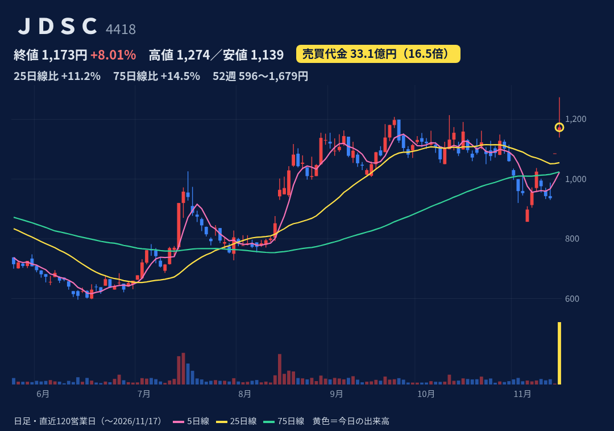
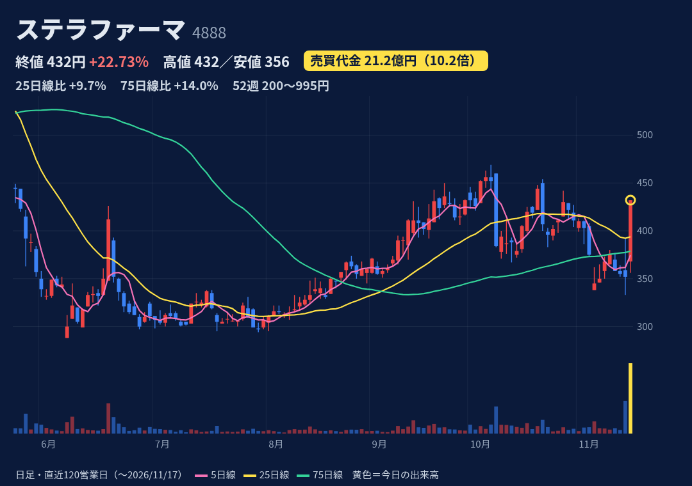
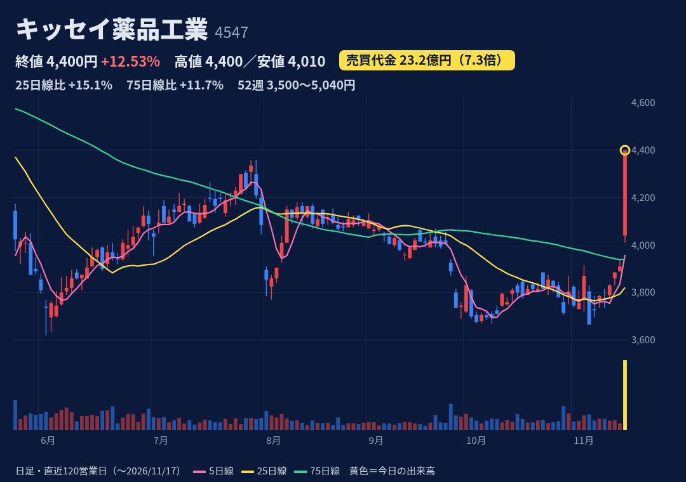
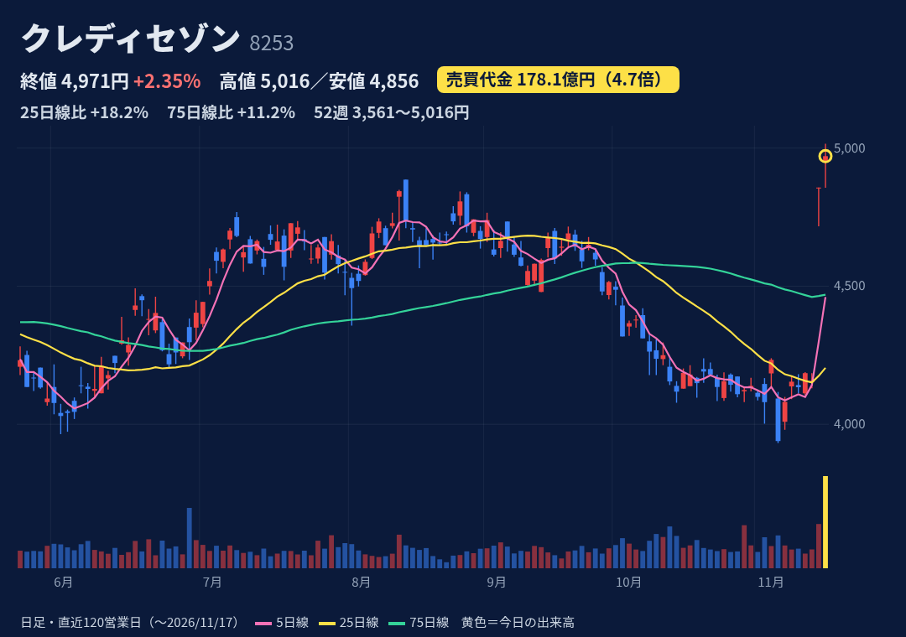
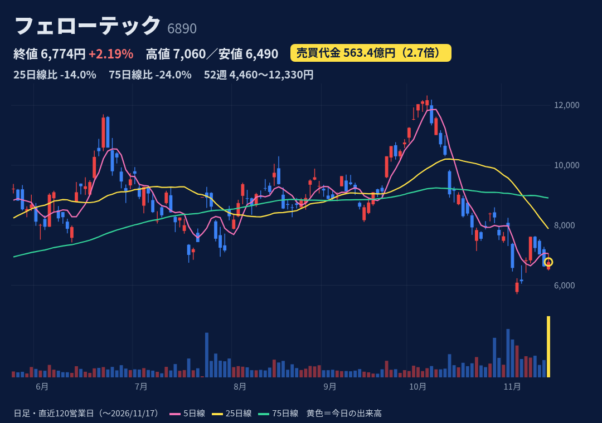
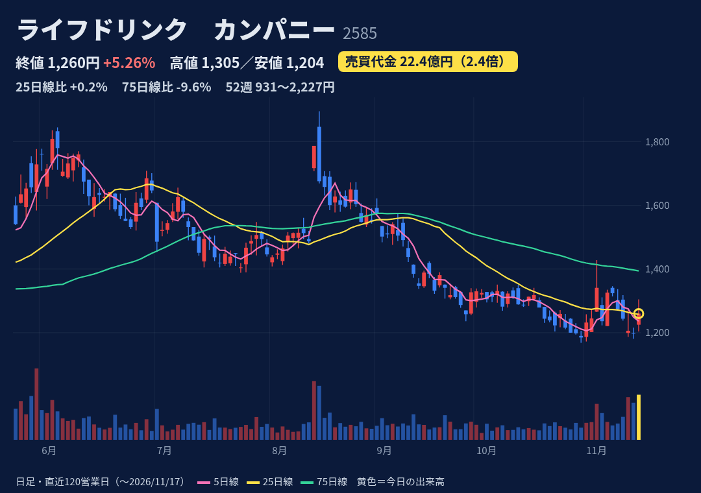

AIを使ったアルゴリズム開発・ライセンス提供（AIソリューション）とM&A助言など。
11/13 15:30の1Q決算（売上61.5億円+19.7%、営業3.68億円+87.5%）を好感。11/16はS高1086円で気配のまま終了、今日が実質的な初商い。
1Q(7-9月)営業3.68億円+87.5%。通期予想は営業9.5億円(+48%)で据え置き、進捗38.7%。売上は子会社の連結除外で−51.8%予想。次の決算は未確認（前年の2Qは2/12）
始値1160・高値1274・終値1173。陽線だが上ヒゲが値幅の約75%、VWAP1204円を下回って終了。25日線+11%、75日線+15%。52週の高安1608/596円の中位（57%）
信用買残70.4万株・売残17.2万株・倍率4.10倍（11/13、前週比 買い+10.2万株）。JPX 11/16：買い69.1万・売り17.3万株。JPX日々公表銘柄等(11/16申込分)に記載なし。11/17以降の指定は未確認
グロースの小型株。売買代金急増は過去1年で8回、7/14のS高後は5日で−15%の前例。11/13にストック・オプション発行確定の開示あり（規模未確認）

ステラケミファ系。がんの放射線治療BNCT用のホウ素医薬品「ステボロニン」の開発・製造販売。
11/16 9:30 ステボロニンが「再発髄膜腫」で一部変更承認（国内初）、同15:00 皮膚血管肉腫が11/30の薬事審議会部会で審議予定と開示。11/17 9:00の説明資料で海南島向け出荷を来年3月再開の見通し。
上期(4-9月)売上1.75億円−12.5%、営業−4.98億円（赤字拡大）。通期予想は売上10.38億円・営業−6.96億円で、下期偏重。継続企業の注記は「該当なし」。次の決算は未確認（前年3Qは2/12）
始値368・高値432・終値432（S高水準で引け、上ヒゲなし）。11/16は承認開示で392円まで上げたが352円に押し戻されていた。25日線+10%、75日線+14%。52週の高安995/200円の下寄り（29%）
信用買残210.6万株・売残2.5万株・倍率82.89倍（11/13）。JPX 11/16：買い225.6万株・売り0株。発行済の約6%が信用買い。JPX日々公表銘柄等(11/16申込分)に記載なし。11/17以降の指定は未確認
赤字のグロース小型株。CVIとの株式・新株予約権の発行プログラム（全体で希薄化24.09%）が進行中、第8回予約権の行使価額567円。急騰→失速の前例が多い（3/24+21%→20日後−27%、6/18+18%→5日後−24%）

中堅製薬。泌尿器・腎透析・希少疾患などの医薬品のほか、情報サービス事業も持つ。
米CG Oncologyが米国11/16に膀胱がん新薬候補のP3（PIVOT-006）で主要評価項目達成（再発リスク68%低下）と発表。キッセイはアジアの開発販売権とCGON株を保有。キッセイ自身の開示は確認できず
上期(4-9月)売上455億円−0.7%、営業16.9億円（前年は68億円の赤字）。11/4に通期営業予想を20→25億円へ上方修正（進捗68%）、純利益は133→100億円へ下方修正。次の決算は未確認（前年3Qは1/30）
始値4040・高値4400・終値4400で高値引け（上ヒゲなし）。25日線+15%、75日線+12%。52週の高安5040/3500円の中位（58%）。売買代金3倍超の急増は過去1年で2回だけ
信用買残1.5万株・売残4.8万株・倍率0.31倍（11/13）の売り長。JPX 11/16も買い1.4万・売り4.8万株。JPX日々公表銘柄等(11/16申込分)に記載なし。11/17以降の指定は未確認
新薬はCGONの開発品で、日本などでの承認・発売時期は未確認。CGONの株価と開発の進み具合に連動しやすい。タブネオスの売上見通しは11/4に減額されている

流通系クレジットカード大手。ペイメント・リース・ファイナンス（住宅ローン等）・海外金融を展開。
11/13 15:30 上期決算と同時に通期純利益予想を755→900億円へ上方修正、年間配当160→175円、自社株買い600万株（4.1%）・200億円上限（11/16〜2/26、全株消却）。11/16にS高、今日は続伸。
上期 営業収益2,508億円+9.9%、事業利益632億円+40.5%（フィスコ）、純利益447億円+63%。通期純利益900億円(+45.8%)で進捗50%。ベトナム関連会社株の一部売却益（一時的）を含む。次の決算は未確認（前年3Qは2/13）
始値4949・高値5016・終値4971。陽線、上ヒゲは小さめ（値幅の28%）。5016円は直近1年の最高値。25日線+18%、75日線+11%と乖離が大きい
信用買残36.6万株・売残1.5万株・倍率23.79倍（11/13）。JPX 11/16：買い38.2万・売り5.9万株と売りが急増。JPX日々公表銘柄等(11/16申込分)に記載なし。11/17以降の指定は未確認
純利益の上方修正には一時的な売却益が含まれる。2日で約20%上昇し25日線から大きく乖離。過去1年は売買代金急増が2回のみで、急騰の前例が少ない

半導体製造装置向けの真空シール・石英・セラミックスなどの部材と、サーモモジュール等の電子デバイス。
11/16 15:30 上期決算と同時に最終益予想を480→500億円（保有株式売却益）、期末配当を100円増の200円（年300円）、中計の27/12期目標を営業480→820億円へ引き上げ。
決算期変更の移行期で前年比較なし。4-9月 売上2,949億円・営業501億円。通期予想 営業680億円は据え置き（11/2に上方修正済み）、進捗74%。次の決算は12月期の本決算、日付は未確認
始値6529（前日比安く寄り）・高値7060・終値6774。陽線だが上ヒゲが値幅の約50%、VWAP6832円を下回る。25日線−14%、75日線−24%。52週の高安12330/4565円の下寄り（28%）
信用買残301.5万株・売残4.4万株・倍率68.21倍（11/13、前週比 買い+15.8万株）。JPX 11/16：買い321.0万株と増加。発行済の約6%。JPX日々公表銘柄等(11/16申込分)に記載なし。11/17以降の指定は未確認
信用買残が多く上値で戻り売りが出やすい。11/4の上方修正で+4%→翌日−17%の前例。純利益の上方修正は株式売却益によるもの。Oasisが保有割合を増やしたと報告（11/13）

「LDC」ブランドのミネラルウォーター・炭酸水・茶系飲料を製造販売。スーパー向けやEC販売が中心。
当日の適時開示・ニュースは確認できず。直近は11/12 16:00の上期決算（経常+3.0%、7-9月は−8.8%）。11/5にJPモルガン・アセットが5%超の大量保有を報告。下落相場での見直し買いの可能性は推測。
上期(4-9月)売上362億円+26.4%、営業39.4億円+11.5%、経常35.8億円+3.0%。通期予想（売上720億円・営業65億円）据え置き、経常進捗57.9%は5年平均61.9%を下回る。次の決算は未確認（前年3Qは2/12）
始値1225・高値1305・終値1260。陽線だが上ヒゲが値幅の約45%、VWAP1268円を下回る。25日線とほぼ同じ（+0.2%）、75日線−10%。52週の高安2227/931円の下寄り（25%）
信用買残86.2万株・売残6.1万株・倍率14.24倍（11/13、前週比 売り+3.8万株）。JPX 11/16：買い86.3万・売り7.2万株。JPX日々公表銘柄等(11/16申込分)に記載なし。11/17以降の指定は未確認
材料が確認できない上昇。7-9月は減益で利益率が低下。急騰→失速の前例あり（8/14 S高→20日後−25%）
株価・出来高・信用残：取引所データ。材料：各社開示・各社報道。